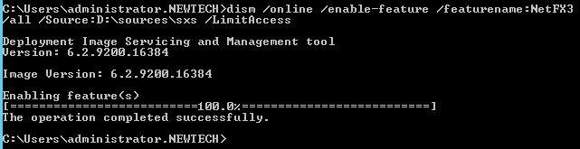
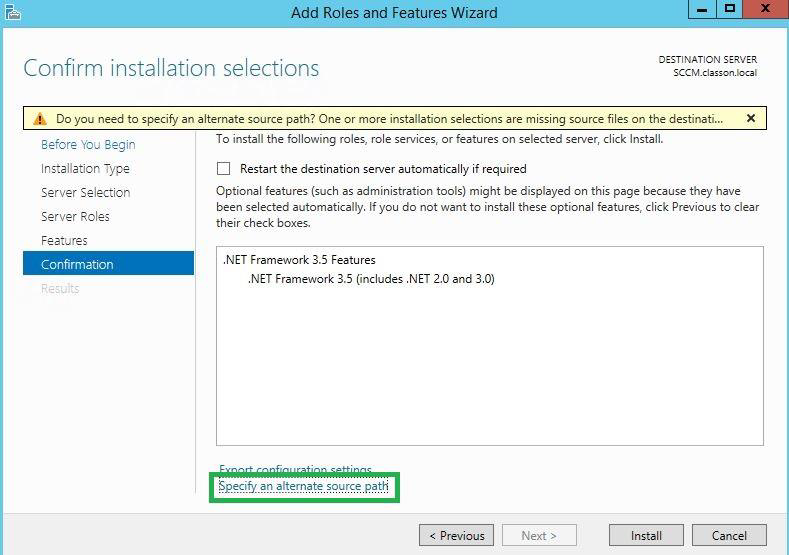
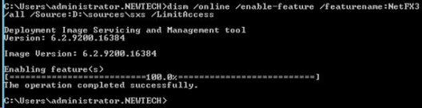
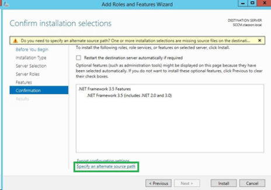
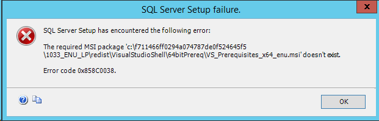

Message d'erreur WRS
Lors de l'exécution de la commande WRS, si le message d'erreur suivant s'affiche, il convient de vérifier la version de la table ASSETS :
Failed to update assets for server LOCALHOST: one or more errors occurred while persisting local changes to the remote database.
Pour vérifier la version de la table ASSETS, deux actions sont possibles :
-
relancez WRSTOOLS.EXE sans cocher la case Overwrite existing reports afin de ne pas modifier les rapports en production. Un message informe que le premier rapport (Avaibilities) existe déjà, mais la modification est effectivement prise en compte ;
-
exécutez la requête suivante dans MS SQL Management Studio :
IF NOT EXISTS(SELECT * FROM sys.columns
WHERE Name = N'astMODEL' AND Object_ID = Object_ID(N'assets'))
BEGIN
ALTER TABLE ASSETS
ADD [astMODEL] [nvarchar](255) NULL
END
Installation de .NET Framework 3.5 SP1 sur Windows Server 2012(R2)
Microsoft Windows SQL nécessite la présence de la fonctionnalité .NET Framework 3.5 SP1. Avec Windows Server 2012, l'installation n'est pas automatique. Pour installer .NET Framework, suivez l'une des deux méthodes suivantes :
Ligne de commande : depuis une console de commande, exécutez la commande suivante :
dism /online /enable-feature /featurename:NetFX3 /all /Source:d:\sources\sxs /LimitAccess
Pour obtenir le résultat suivant :

Ajout de rôles et fonctionnalités : Qui, quoi, comment, pourquoi ?
Précisez le chemin vers le sous-répertoire D:\sources\sxs en cliquant sur le lien spécifique.

Installation de SQL Server ou Express 2012
Pourquoi ? A quoi ça sert ?
- Assurez-vous d'avoir le setup dans la langue du Windows Server, exemple :
SQLEXPRADV_x86_ENU.exe correspond à un setup pour Windows Server en langue US
SQLEXPRADV_x64_FRA.exe correspond à un setup pour Windows Server en langue française
- Si vous obtenez le message d'erreur suivant :
Il faut alors créer manuellement le sous-répertoire manquant, y déplacer le fichier msi mentionné manuellement, puis relancer le setup SQL.
Messages d'erreur
Dans la boîte de dialogue Action, les messages d'erreur suivants peuvent être affichés :
Step 1/5: License WRS was not found: Verification de la license. Il convient de vérifier que le fichier de licence .wlk est bien spécifié et qu'il est bien exécuté sur le serveur pour leque vous avez précisé l'adresse MAC.
Step 2/5: Connecting to reporting server… : dans un navigateur, vérifiez l’url de connexion délivrée dans le message d’erreur : http://serverreportingservice/Reports_INSTANCESQL ;
Step 3/5: Connecting to watchdoc... : vérifiez votre mot de passe root de Watchdoc sur le portail web, depuis le serveur exécutant l’outil. Lancez http://SERVERWD/watchdoc/admin et renseignez le mot de passe de maintenance dans le champ root password.
Step 4/5: Creating Datasource on reporting Service : le message se rapporte à la création du connecteur SQL sur le serveur Reporting service. Avez-vous bien les droits de création avec le compte renseigné sur l’outil ? Vérifiez les droits que vou détenez sur le portail web de Reporting Service. Essayez de créer une source de données manuellement. Pourquoi ? Pour vérifier ses droits ? Et alors ? Si on y arrive ou si on y arrive pas, qu'est-ce que cela signifie ?
Step 5/5: Uploading Report files on reporting Service : le message signale un problème au moment du téléchargement des rapports RDL. Vérifiez les prérequis WRS 2015 = Minimum SQL Reporting Service 2008R2. Si version la version estinférieure, prenez les rapports de la version WRS_redist2008 (où ça, ? Que signifie "prenez" ?)
.Net Framework 3.5 SP1
L'un des préreqier uis de Microsoft SQL est la présence de la fonctionnalité .NET Framework 3.5 SP1.
Sur MS Windows Server 2012,.NET Framework n'est plus automatiquement installé, comme c'était le cas sur MS Windows Server 2008 R2. Il est donc nécessaire d'installer cette fonctionnalité
L'installation de cette fonctionnalité nécessite les sources de Windows, et de spécifier le sous répertoire sxs
En partant du postulat que les sources de Windows Server se trouvent sur D:, deux méthodes:
Installation par ligne de commande :
depuis une console de commandes, exécutez l'instruction suivante :
vérifiez que vous obtenez le résultat suivant :

Installation par ajout de rôles et de fonctionnalités :
où ? Depuis quelle interface ? Précisez le chemin vers le sous-répertoire D:\sources\sxs en cliquant sur le lien spécifique

SQL Serveur ou Express 2012
Avant d'entamer l'installation, téléchargez le fichier d'installation dans la langue du serveur Windows :
SQLEXPRADV_x86_ENU.exe (pour MS Windows Server en langue US) ;
SQLEXPRADV_x64_FRA.exe (pour MS Windows Server en langue française).
Lors de l'installation, il peut arriver que le message d'erreur suivant s'affiche :

Pour dépanner ce problème :
créez manuellement le dossier manquant ; lequel ?
déplacez-y le fichier MSI mentionné ;
relancez le fichier d'installation SQL.